День рождения Календаря и Заметок! Отмечаем тестом
Как проходит ваш типичный вечер пятницы?
Окукливаюсь на диване и смотрю сериальчики
Планирую следующую рабочую неделю
Сначала в ресторанчик, потом в барчик, потом на рейв
Провожу осознанную медитацию с поющими чашами
Я так устаю, что просто лежу лежа...
Как вы принимаете трудные решения?
Я не боюсь трудных решений. Трудные решения боятся меня
Внимательно взвешу все «За» и «Против»
Подкину монетку и разберусь с последствиями
Если не получается решить быстро, попрошу совета
Я просто тихо посижу тут, пока эти сложные решения не уйдут
Скоро отпуск! Что вы запланировали?
Я беру и еду в отпуск. Лучше по путёвке
Вот чек-лист вещей, вот список мест и кафе, вот билеты
Планирую совсем не работать — это отпуск
О, перелёт 4 часа, успею передать дела коллегам до отеля
Надеюсь, скоро — это завтра. Пора выбрать, куда едем!
Вам легко придумать планы на выходные?
Я просыпаюсь и делаю то, что нужно делать в выходные
Хах! Вот мой список идей на выходные
Сегодня бар с коллегами, завтра день с семьёй
Придумать легко — а чтобы успеть, нужно постараться
Куда все — туда и я, плыву по течению
Друг просит помочь с переездом — сегодня!
Беру и помогаю без вопросов. На меня можно положиться
Сначала сверюсь со своими планами — помогу, если смогу
Если получится сделать свои дела. У меня бассейн в это время!
У меня идея — нанимаю грузчиков, а мы с другом идём гулять
Ура, спасение! Мои дела всё равно как-то не идут уже
Дальше
Предыдущий вопрос
Узнать результат
Перерыв 5 минут!
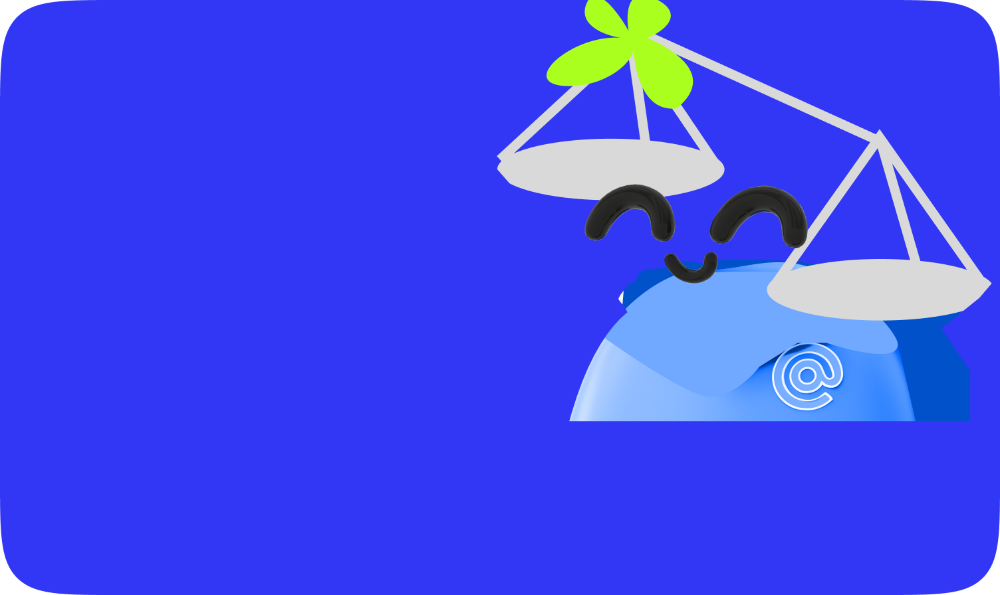
Балансиата
Вам удаётся и ударно работать, и отдыхать так, чтобы потом опять. Оцените наши идеи, как отдыхать и делать качественные перерывы
Читать советы
Поделиться
Нечего выдумывать
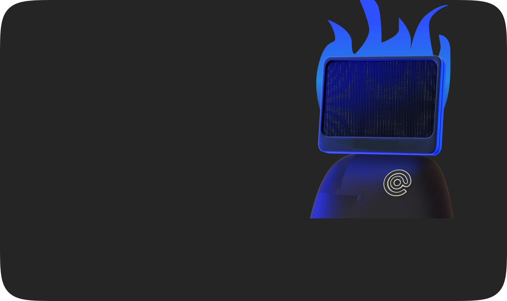
Экшен-пёрсон
Вы берёте и делаете — это круто. Но иногда берёте на себя слишком много. Запишите сделанное за день — это придаст сил
Читать советы
Поделиться
Это сделаю, это делегирую
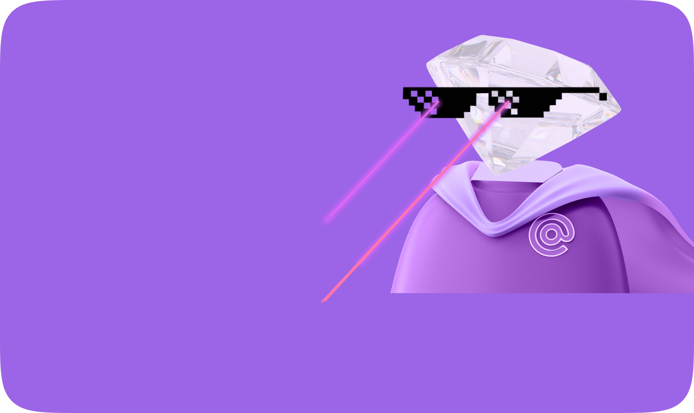
Решатор
Вы успеваете всё. Точнее, всё, что нужно. А то, что не успеваете —просите сделать других. Как просить непринуждённо — расскажет шаблон с советами
Читать советы
Поделиться
Не записали — забыли
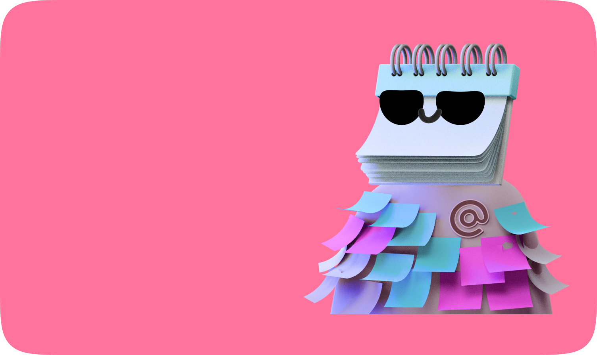
Планерио
Вам всё по плечу, когда есть план — остальным остаётся только завидовать. На случаи, когда планы рушатся — сохраните чек-лист для заземления
Читать советы
Поделиться
Пусть поближе подойдут
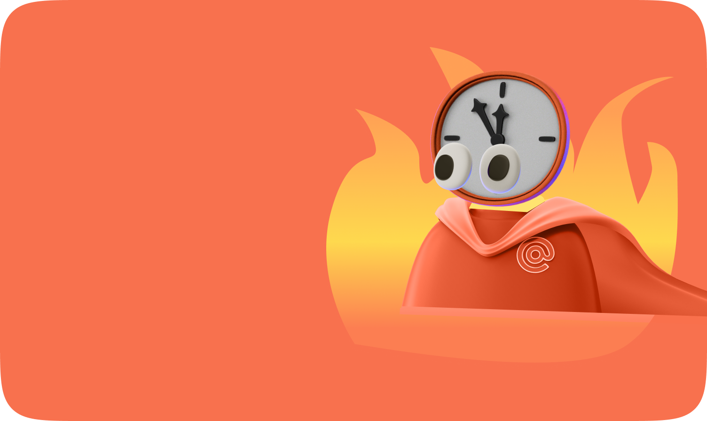
Тик-так-всё
Вы часто делаете всё в последний момент. Как же вы хороши в эти моменты! Вот шаблон для особых случаев прокрастинации
Читать советы
Поделиться
Продуктиватор
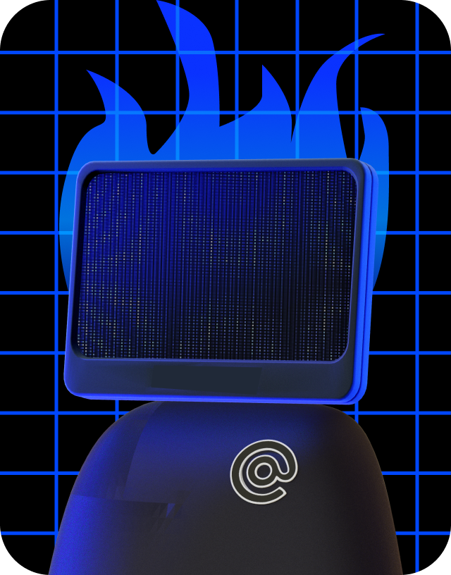
Таскинатор
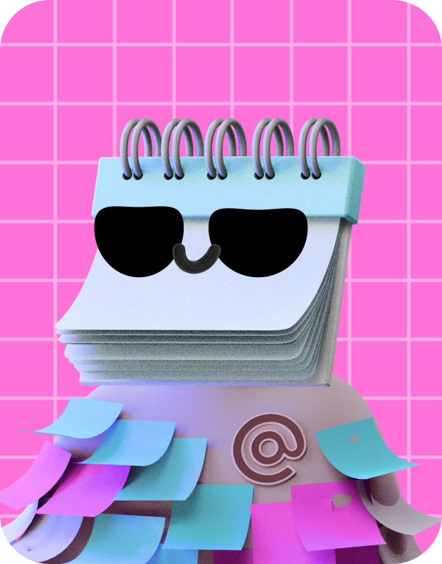
Балансиатор
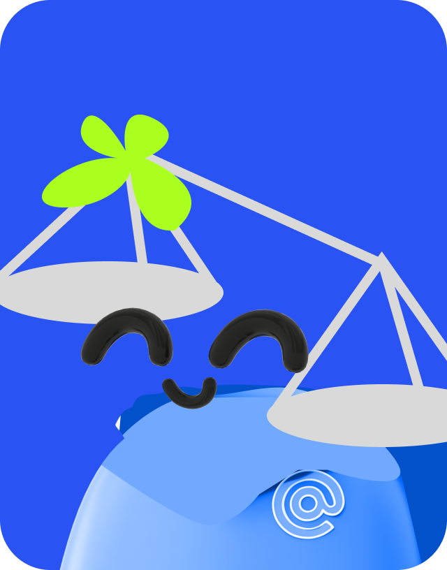
Редко, но метко
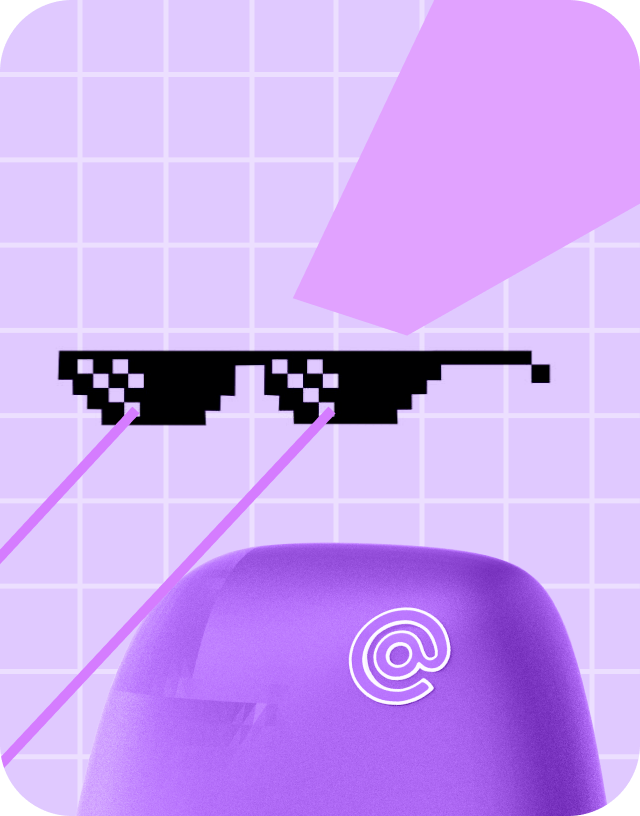
Отложка-тревожка
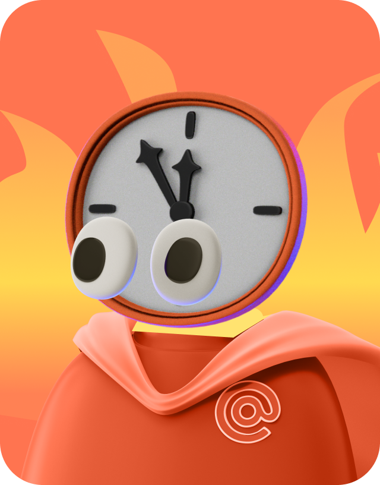
Сколько всего успели сделать за год
Создавали
новые заметки
Написать свою
Создано заметок
1 540 586
Придумывали
с нейросетью
Сгенерировать идеи
Написано текстов
30 114
Любимый цвет заметок и событий — красный
Выбрать свой цвет
Создавали напоминания и встречи
Добавить важное в Календарь
Создано встреч
7 157 621
Генерировали поздравления с днём рождения
Поздравить друзей
Поздравлений написано
57 292
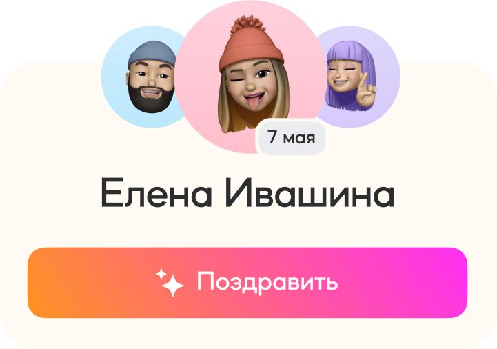
Поделись тестом с друзьями